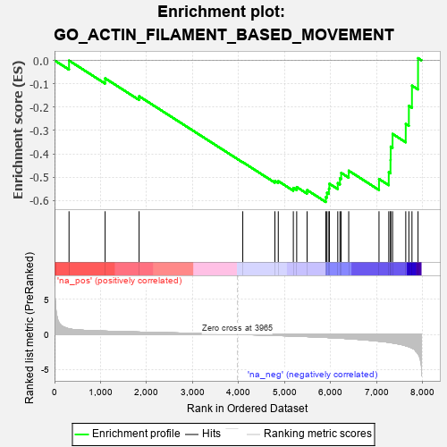

| | | Dataset | 7d |
| Phenotype | NoPhenotypeAvailable |
| Upregulated in class | na_neg |
| GeneSet | GO_ACTIN_FILAMENT_BASED_MOVEMENT |
| Enrichment Score (ES) | -0.6058364 |
| Normalized Enrichment Score (NES) | -1.6047455 |
| Nominal p-value | 0.007894737 |
| FDR q-value | 0.093526445 |
| FWER p-Value | 1.0 |
Table: GSEA Results Summary

Fig 1: Enrichment plot: GO_ACTIN_FILAMENT_BASED_MOVEMENT
Profile of the Running ES Score & Positions of GeneSet Members on the Rank Ordered List
| PROBE | GENE SYMBOL | GENE_TITLE | RANK IN GENE LIST | RANK METRIC SCORE | RUNNING ES | CORE ENRICHMENT | | 1 | TNNC2 | | | 315 | 0.795 | -0.0008 | No |
| 2 | MYO1D | | | 1099 | 0.464 | -0.0767 | No |
| 3 | GATA4 | | | 1837 | 0.330 | -0.1533 | No |
| 4 | PDE4B | | | 4089 | -0.022 | -0.4355 | No |
| 5 | MYO5A | | | 4787 | -0.155 | -0.5156 | No |
| 6 | DLG1 | | | 4860 | -0.169 | -0.5164 | No |
| 7 | PARVA | | | 5187 | -0.245 | -0.5455 | No |
| 8 | SCN1A | | | 5260 | -0.261 | -0.5418 | No |
| 9 | ACTN3 | | | 5486 | -0.315 | -0.5547 | No |
| 10 | SUN2 | | | 5893 | -0.433 | -0.5847 | Yes |
| 11 | KCNQ1 | | | 5918 | -0.441 | -0.5662 | Yes |
| 12 | ACTN2 | | | 5960 | -0.458 | -0.5489 | Yes |
| 13 | TPM2 | | | 5970 | -0.460 | -0.5276 | Yes |
| 14 | ROCK1 | | | 6152 | -0.520 | -0.5250 | Yes |
| 15 | MYO1E | | | 6200 | -0.537 | -0.5046 | Yes |
| 16 | TPM1 | | | 6226 | -0.545 | -0.4812 | Yes |
| 17 | TRPM4 | | | 6390 | -0.612 | -0.4718 | Yes |
| 18 | MYH10 | | | 7048 | -0.966 | -0.5073 | Yes |
| 19 | HCN4 | | | 7260 | -1.134 | -0.4784 | Yes |
| 20 | ANK2 | | | 7298 | -1.170 | -0.4259 | Yes |
| 21 | MYO7A | | | 7302 | -1.175 | -0.3689 | Yes |
| 22 | GPD1L | | | 7343 | -1.215 | -0.3146 | Yes |
| 23 | KCNN2 | | | 7629 | -1.611 | -0.2717 | Yes |
| 24 | MYO6 | | | 7697 | -1.753 | -0.1946 | Yes |
| 25 | PDE4D | | | 7764 | -1.944 | -0.1079 | Yes |
| 26 | CAV3 | | | 7896 | -2.739 | 0.0094 | Yes |
Table: GSEA details [plain text format]
Fig 2: GO_ACTIN_FILAMENT_BASED_MOVEMENT: Random ES distribution
Gene set null distribution of ES for GO_ACTIN_FILAMENT_BASED_MOVEMENT